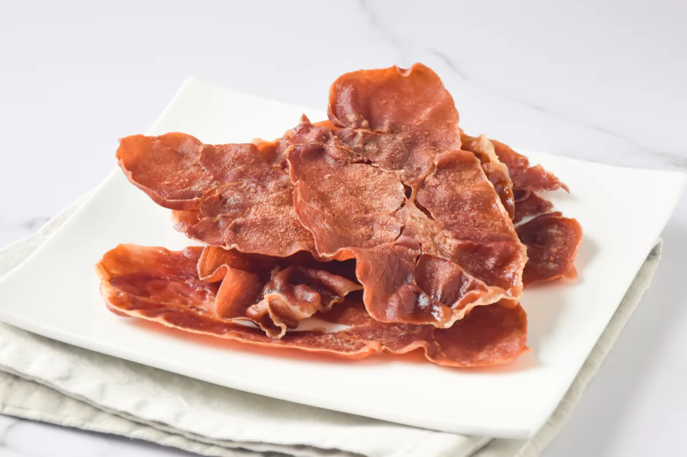

Para preparar este crujiente de jamón, utilizaremos jamón serrano o jamón ibérico, según preferencias, envasado o cortado a máquina para que las lonchas tengan el mismo grosor y la cocción sea más uniforme.
El cuanto a los posibles usos del crujiente de jamón, a nosotros nos gusta utilizarlo desmigado sobre cremas o purés, por ejemplo sobre la crema de calabaza, ya que aporta un acabado salado perfecto. Desmigado también podemos agregarlo al relleno de unas croquetas o unos canelones si queremos un toque crujiente. También podemos utilizarlo como toque final en un plato de pasta, al estilo de un pangrattato o pan rallado, ya sea solo o mezclado con este.
Servido entero, dará volumen a los platos aparte de sabor. Por ejemplo, en ensaladas, huevos fritos o tostadas. Combina muy bien contrastando sabores dulces, sobre una tostada con brie caliente, ¡está delicioso!
Como picoteo, servido en cucuruchos de papel también está muy bueno, aunque como el jamón queda más salado al cocinarse, debido a su deshidratación, hay que tenerlo en cuenta para escoger un jamón serrano suave.
Si queréis servirlo de un tamaño concreto, es mejor cortarlo antes de meterlo en el microondas ya que después será difícil conseguir trozos iguales.
La opción de usar el microondas para su elaboración es perfecta para preparar poca cantidad, de 2 a 6 lonchas. Para más cantidad es preferible usar el horno, para conseguir hacer más cantidad de una vez. En caso de hacerlo en el horno, prepararemos el jamón de la misma manera indicada en esta receta pero lo hornearemos a 180 °C durante unos minutos.
Podemos servir el jamón crujiente de tres maneras: totalmente plano, para lo cual a la hora de prepararlo, pondremos un plato encima para hacer peso. Podemos presentarlo con volumen disponiendo el jamón con ondas en el plato y sin nada de peso encima. O bien, la tercera forma de presentación es desmenuzado, en cuyo caso daría igual cómo lo cocinemos ya que lo desmigaremos una vez frío.
El tiempo indicado en esta receta es para un microondas de 800 W de potencia. Si el vuestro tiene otra potencia, habrá que adaptar el tiempo. En cualquier caso, es preferible empezar con menos tiempo y comprobar si el jamón está hecho.El tiempo indicado en esta receta es para un microondas de 800 W de potencia. Si el vuestro tiene otra potencia, habrá que adaptar el tiempo. En cualquier caso, es preferible empezar con menos tiempo y comprobar si el jamón está hecho.